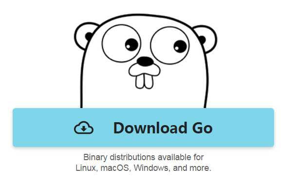
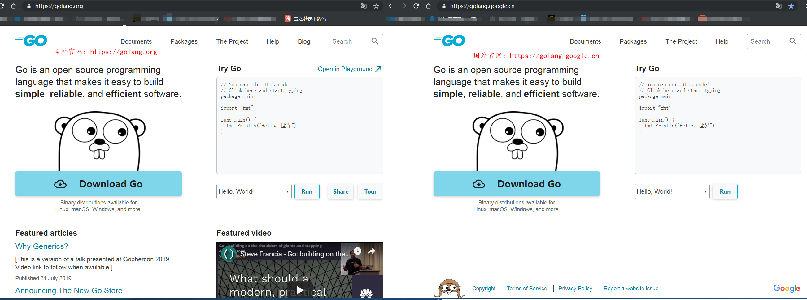
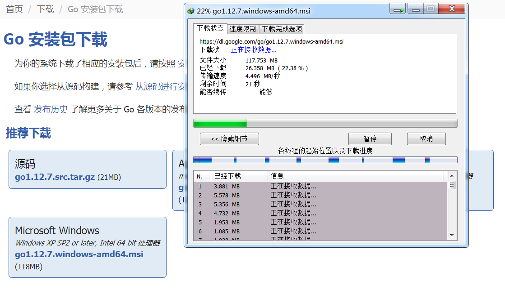
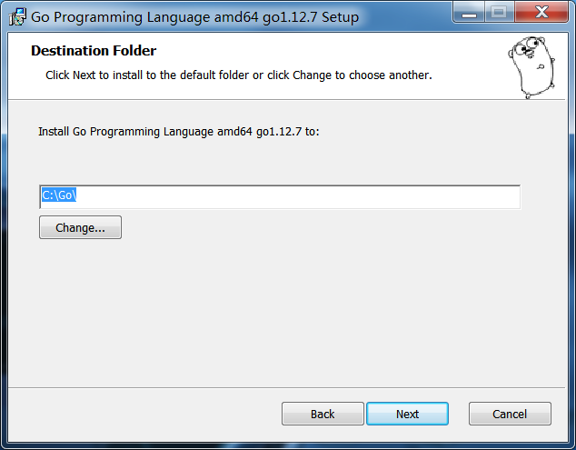
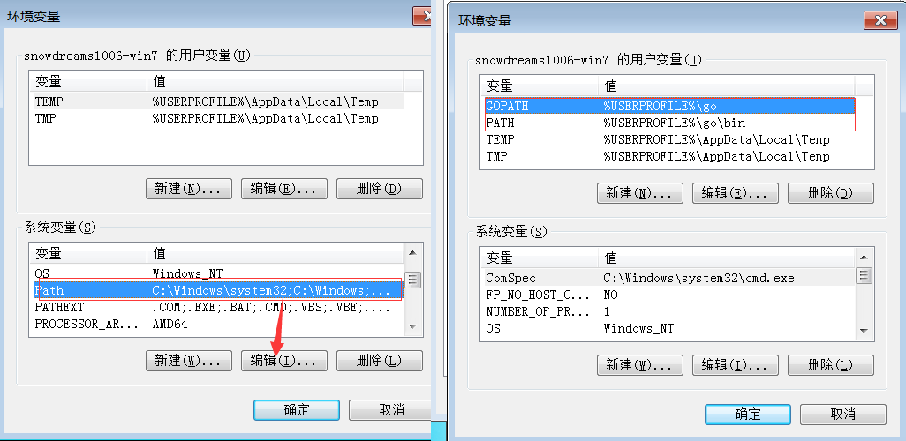
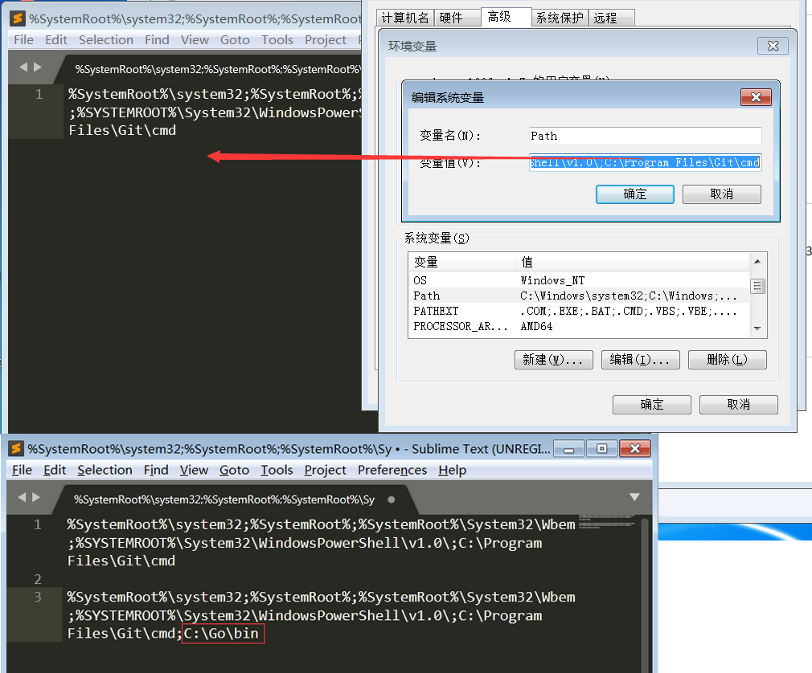
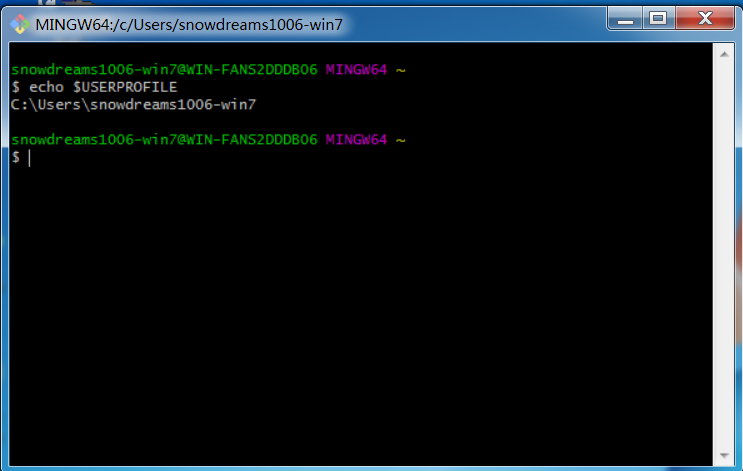
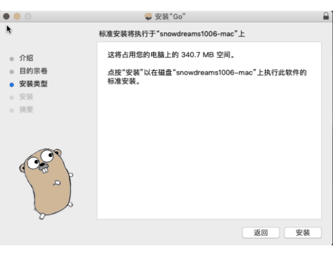
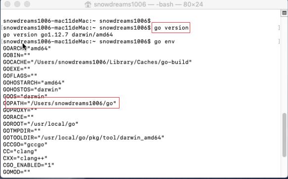
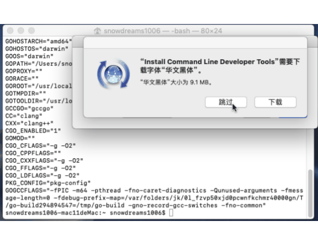

1. 环境搭建
千里之行始于足下,开始 Go 语言学习之旅前,首先要搭建好本地开发环境,然后就可以放心大胆瞎折腾了.
Go 的环境安装和其他语言安装没什么特别注意之处,下载安装包下一步下一步直到完成,可能唯一需要注意的就是 $GOPATH 环境变量的设置问题.
不过,简单起见,目前采用默认配置,等到比较熟悉 Go 语言时候再自定义设置也不迟,因此采用喜闻乐见的傻瓜式安装方式吧!

1.1. Go 下载安装
由于众所周知的原因,谷歌被墙,因此 Go 的国外官网无法访问,好在已提供 Go 的中国官网可以正常访问.

- 国外官网: https://golang.org/
- 国内官网: https://golang.google.cn/
- Go 语言中文网: https://studygolang.com/
除了官网下载,也可以从第三方网站下载,一般速度比较快,下面就以
Windows系统为例演示下载安装过程.

双击下载文件 go1.12.7.windows-amd64.msi 按照提示一直下一步直到安装完毕.
默认情况下 Go 安装到 C:\Go 目录,同时设置了 $GOPATH 环境变量.

如果安装时没有采用默认配置而是自定义安装位置,那么应该自行设置后续相关环境变量.


默认情况下,安装
Go语言后新增了GOPATH和PATH用户系统变量,同时修改了系统环境变量PATH.
默认情况下,Go 安装成功后发生了如下改变:
- 增加了用户变量:
GOPATH=%USERPROFILE%\go - 增加了用户变量:
PATH=%USERPROFILE%\go\bin - 修改了系统变量:
PATH=%PATH%;C:\Go\bin
其中 %USERPROFILE% 代表的是当前计算机登录用户的家目录,比如我的登录名是 snowdreams1006-win7,那么 %USERPROFILE% 表示的是 C 盘下的 Users 目录下的 snowdreams1006-win7 目录,即 %USERPROFILE%=C:\Users\snowdreams1006-win7

1.2. Go 测试验证
安装前命令行中输入 go 提示无命令,安装后再次输入 go 则能正确显示命令信息.
安装后必须新打开命令行窗口才能生效,
go version可以打印出Go的版本信息.

$ go version
go version go1.12.7 windows/amd64

上述命令行操作验证了 Go 语言本身已安装正确,其中 go env 展示了 Go 相关的环境变量,目前重要的变量有两个:
GOROOT:Go的安装目录,默认GOROOT=c:\goGOPATH:Go的工作空间,默认GOPATH=C:\Users\snowdreams1006-win7\go,其中C:\Users\snowdreams1006-win7表示用户家目录.
上述两个变量都是安装后自动设置的,除非自定义安装位置才需要手动调整一系列的环境变量,作为初次接触 Go 语言,不建议瞎折腾,为时过早,目前只要记住这些目录的位置在哪就可以了.
任意目录下打开命令行窗口都能调用
Go相关命令,比如go version和go env,这是因为安装Go时已自动追加了系统环境变量PATH=%PATH%;C:\Go\bin,如果上述验证失败,记得修改环境变量PATH试试看!
1.3. Mac 安装配置
点此下载并双击安装 go1.12.7.darwin-amd64.pkg ,同样傻瓜式下一步安装操作.

snowdreams1006-mac11deMac:~ snowdreams1006$ go version
go version go1.12.7 darwin/amd64
安装完毕后打开终端验证 Go 的基本命令是否正常,运行 go version 和 go env 查看基本配置信息.

运行命令的过程中可能会询问是否安装命令行开发者工具,按照提示默认安装即可.

1.4. Go 安装小结
Go 语言安装来说比较简单,建议采用默认配置进行安装,这样不用操心各种环境变量的配置,否则一上来就暴露在 GOROOT,GOPATH 和 PATH 等诸多陌生概念之中,影响初学者搭建环境的信心,而且这些概念在刚开始并不会用到,未免有些操之过急.
所以,采用默认安装配置后,只要记住 Go 默认位置以及接下来在哪写 Go 程序的位置足矣!
- 测试是否安装成功,只需要在命令行窗口中运行
go version能够输出Go的版本信息表示安装成功,否则可能安装失败. - 查询
Go的安装位置以及工作空间位置只需运行go env就能找到相应的GOROOT和GOPATH信息.
如果是 Windows 系统:
Go的默认安装位置(GOROOT):C:\goGo的默认工作空间(GOPATH):C:\Users\yourusername\go
如果是 Mac 系统:
Go的默认安装位置(GOROOT):/usr/local/goGo的默认工作空间(GOPATH):/Users/yourusername/go
搭建基本的语言环境是第一步,命令行操作虽然简单,不需要额外依赖,但实际工作中总不能一直在命令行中编写代码吧,还需要一个称心如意的 IDE 来辅助我们开发,下一节见!